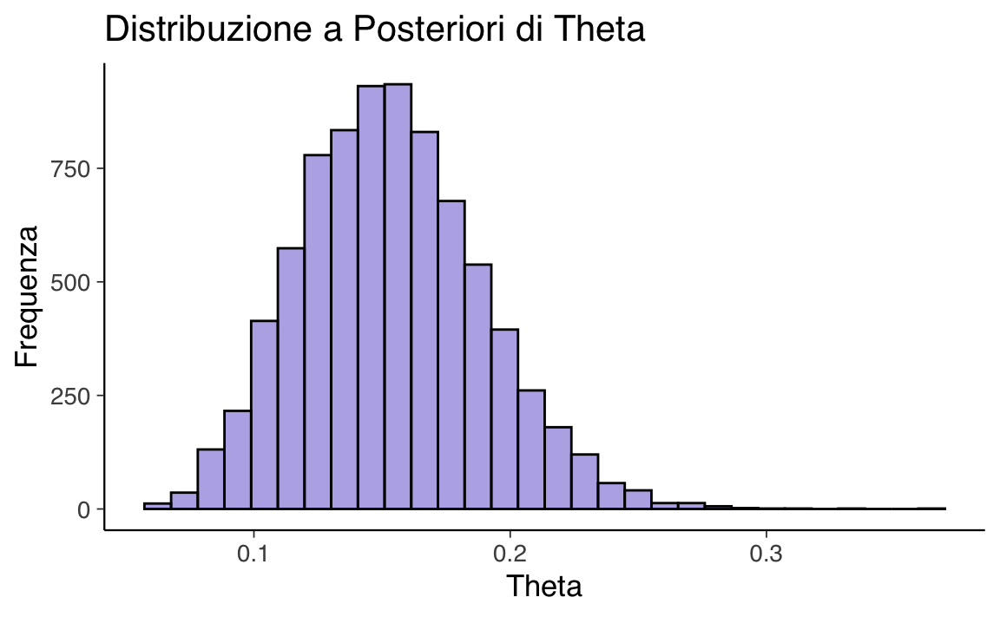
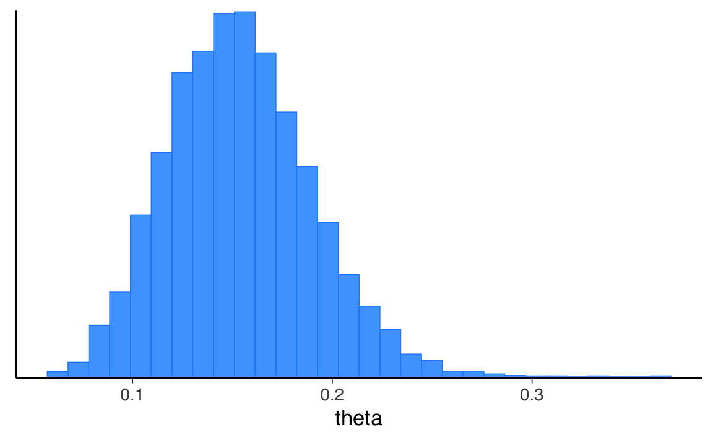
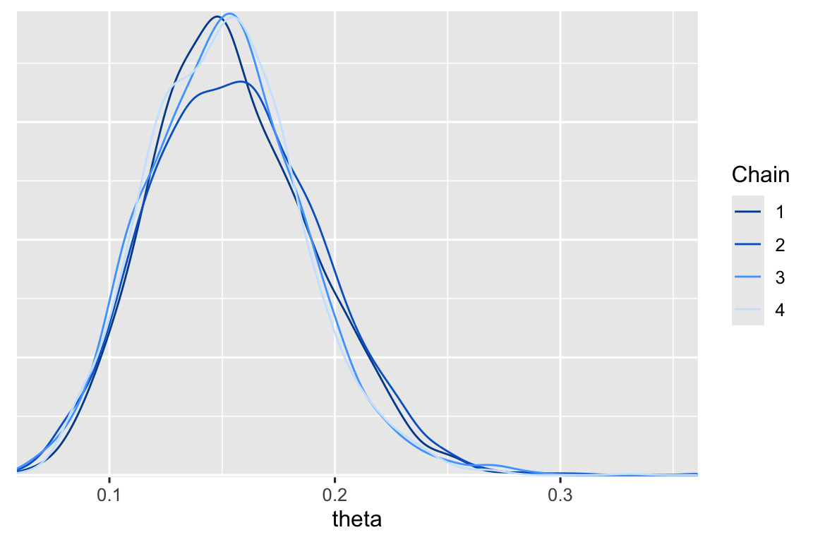
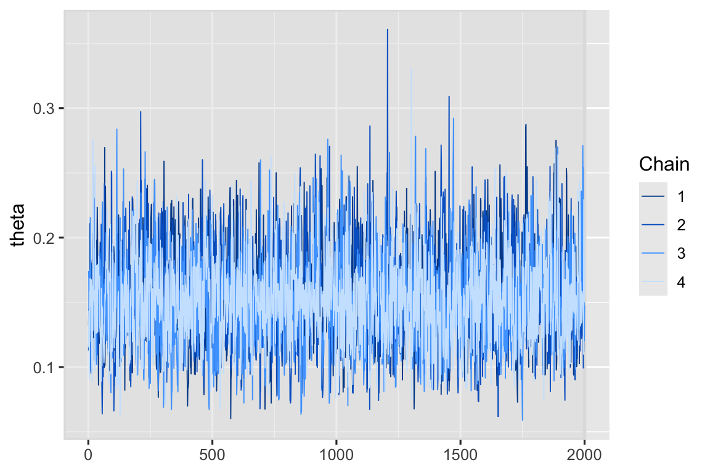
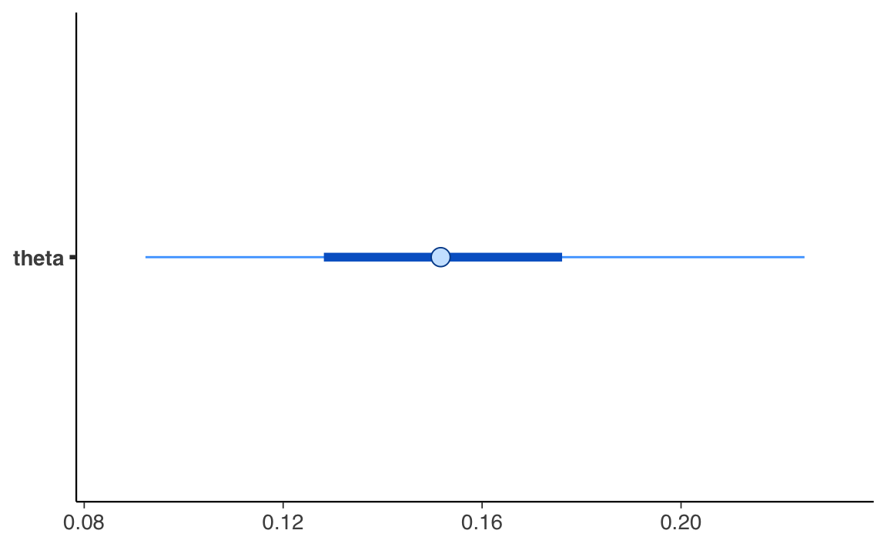
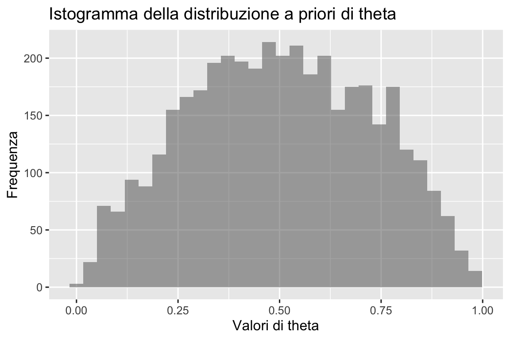
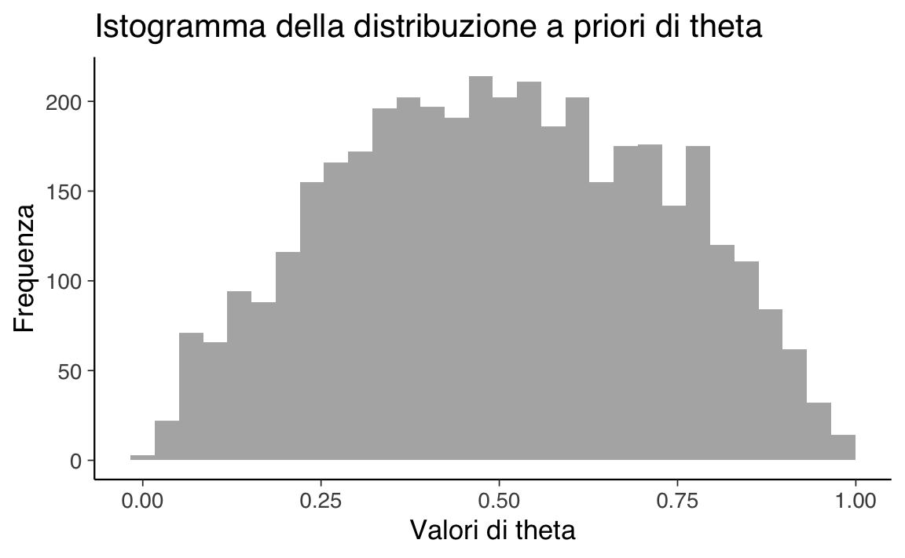

here::here("code", "_common.R") |>
source()
# Load packages
if (!requireNamespace("pacman")) install.packages("pacman")
pacman::p_load(cmdstanr, posterior, easystats)52 Linguaggio Stan
In questo capitolo imparerai a
Prerequisiti
- Leggere
Preparazione del Notebook
52.1 Introduzione
Stan è un linguaggio di programmazione probabilistica (PPL) progettato per l’inferenza bayesiana su modelli complessi. Tra le sue caratteristiche principali, Stan implementa un algoritmo avanzato chiamato No-U-Turn Sampler (NUTS), che ottimizza il metodo Hamiltonian Monte Carlo (HMC). Questa tecnica rappresenta un’evoluzione rispetto all’algoritmo di Metropolis (Capitolo 50), tradizionalmente utilizzato per generare campioni da distribuzioni a posteriori. Sebbene entrambi gli approcci producano lo stesso risultato finale, NUTS riduce drasticamente il numero di iterazioni necessarie per raggiungere la convergenza, soprattutto nei modelli ad alta dimensionalità.
Dal punto di vista concettuale, NUTS e Metropolis mirano a costruire una catena di Markov che converga alla distribuzione a posteriori target. Tuttavia, NUTS lo fa in modo molto più efficiente, rendendolo la scelta preferita quando si analizzano modelli complessi. Stan combina questa efficienza con un’interfaccia flessibile, compatibile con diverse piattaforme come R, Python e Julia. In questo corso, useremo cmdstanr, l’interfaccia R per Stan. Oltre a cmdstanr, esistono altre interfacce come CmdStanPy per Python e Stan.jl per Julia, che facilitano l’integrazione di Stan nei flussi di lavoro di programmazione.
52.2 Stan e la Programmazione Probabilistica
La programmazione probabilistica unisce principi di statistica bayesiana e linguaggi di programmazione, semplificando lo sviluppo di modelli complessi. In un linguaggio PPL come Stan, l’utente deve solo specificare le distribuzioni a priori e la funzione di verosimiglianza. L’inferenza viene poi gestita automaticamente dal linguaggio, che utilizza metodi avanzati di campionamento come NUTS per produrre campioni dalla distribuzione a posteriori.
Un programma Stan è strutturato in blocchi. Ogni blocco ha una funzione specifica, come dichiarare i dati (data), definire i parametri (parameters), specificare la densità del modello (model) e generare quantità derivate (generated quantities). Questa struttura modulare rende Stan intuitivo e adattabile a un’ampia gamma di applicazioni.
Le variabili in Stan devono essere dichiarate con tipi specifici (int per interi, real per numeri reali, vector per vettori, ecc.) e possono avere vincoli, come lower=0 o upper=1, per garantire che i loro valori rispettino determinati limiti. Questo approccio, noto come tipizzazione statica, rende i programmi Stan robusti e meno soggetti a errori.
52.3 Esecuzione di Stan con CmdStanR
Per eseguire un modello Stan, utilizzeremo qui l’interfaccia cmdstanr, che integra CmdStan in R. L’esempio seguente illustra come generare dati simulati da una distribuzione binomiale e analizzare un problema inverso, stimando il parametro di successo \(\theta\).
52.3.1 Simulazione in Avanti
La simulazione in avanti consiste nel generare dati simulati da un modello probabilistico noto. Supponiamo di voler simulare i risultati di uno studio con \(N = 100\) prove e una probabilità di successo \(\theta = 0.3\). Il codice Stan per questa simulazione è il seguente:
data {
int<lower=0> N; // Numero di prove
real<lower=0, upper=1> theta; // Probabilità di successo
}
generated quantities {
int<lower=0, upper=N> y; // Numero di successi
y = binomial_rng(N, theta);
}Per eseguire il modello in R con cmdstanr dobbiamo compilare il modello:
model1 <- cmdstan_model(here("stan", "binomial-rng.stan"))Definire i dati:
data_list <- list(N = 100, theta = 0.3)Eseguire il campionamento:
fit1 <- model1$sample(
data = data_list,
fixed_param = TRUE,
seed = 123,
show_messages = FALSE )Estrazione dei risultati:
y_samples <- fit1$draws(variables = "y", format = "matrix")[, 1]
y_samples
#> # A draws_matrix: 1000 iterations, 4 chains, and 1 variables
#> variable
#> draw y
#> 1 28
#> 2 34
#> 3 31
#> 4 29
#> 5 26
#> 6 25
#> 7 31
#> 8 28
#> 9 30
#> 10 36
#> # ... with 3990 more drawsLa simulazione in avanti ci permette di generare dati simulati per esplorare il comportamento del modello sotto specifiche ipotesi sui parametri.
52.3.2 Problema Inverso
Nel problema inverso, l’obiettivo è stimare i parametri di un modello a partire dai dati osservati.
Supponiamo di analizzare la proporzione di artisti della Generazione X presenti al MoMA, dove 14 artisti su 100 appartengono a questa generazione. Utilizzeremo una distribuzione Beta(4, 6) come prior per il parametro \(\theta\), la probabilità che un artista appartenga alla Generazione X. Il modello Stan corrispondente è il seguente:
data {
int<lower=0> N; // Numero di osservazioni
int<lower=0, upper=N> y; // Numero di successi
real<lower=0> alpha_prior; // Parametro alpha del prior Beta
real<lower=0> beta_prior; // Parametro beta del prior Beta
}
parameters {
real<lower=0, upper=1> theta; // Probabilità di successo
}
model {
theta ~ beta(alpha_prior, beta_prior); // Prior
y ~ binomial(N, theta); // Verosimiglianza
}Supponiamo di osservare 14 successi su 100 prove e vogliamo stimare la probabilità di successo \(\theta\). In questo esempio, imponiamo su \(\theta\) un prior debolmente informativo, Beta(2, 2).
Per eseguire il modello e stimare \(\theta\) dobbiamo specificare i dati in un formato appropriato per Stan:
stan_data <- list(
N = 100,
y = 14,
alpha_prior = 2,
beta_prior = 2
)Compiliamo il modello:
model2 <- cmdstan_model(here("stan", "moma_model.stan"))Eseguiamo il campionamento:
fit2 <- model2$sample(
data = stan_data,
iter_warmup = 2000,
iter_sampling = 2000,
seed = 42,
show_messages = FALSE
)Il metodo sample() esegue il modello Stan utilizzando un algoritmo a campionamento iterativo (di solito Hamiltonian Monte Carlo). Durante il burn-in (prime iterazioni), i campioni potrebbero non rappresentare accuratamente la distribuzione a posteriori. Questi campioni iniziali vengono scartati e solo quelli successivi sono utilizzati per costruire stime dalla distribuzione a posteriori.
Recuperiamo i campioni di theta dall’oggetto fit2:
theta2_samples <- fit2$draws(variables = "theta", format = "array")
dim(theta2_samples)
#> [1] 2000 4 1Questo indica la struttura dell’array estratto dal modello Stan. Significa che il campionamento ha prodotto 2000 iterazioni per ciascuna delle 4 catene. L’ultimo valore (1) rappresenta il numero di variabili monitorate nel modello (in questo caso, una sola variabile). Quindi, il formato dell’array è (iterazioni, catene, variabili).
theta2_samples |>
glimpse()
#> 'draws_array' num [1:2000, 1:4, 1] 0.132 0.144 0.134 0.143 0.116 ...
#> - attr(*, "dimnames")=List of 3
#> ..$ iteration: chr [1:2000] "1" "2" "3" "4" ...
#> ..$ chain : chr [1:4] "1" "2" "3" "4"
#> ..$ variable : chr "theta"Per maneggiare più facilmente i campioni a posteriori possiamo convertire l’oggetto theta2_samples in un vettore:
theta2_vector <- as.vector(theta2_samples)
length(theta2_vector)
#> [1] 8000theta2_vector |>
head()
#> [1] 0.132 0.144 0.134 0.143 0.116 0.211Per analizzare i campioni generati, possiamo utilizzare istogrammi e tracce MCMC.. Creiamo un istogramma della distribuzione a posteriori di \(\theta\):
ggplot(data.frame(theta = theta2_vector), aes(x = theta)) +
geom_histogram(bins = 30, fill = "blue", color = "black", alpha = 0.5) +
labs(
title = "Distribuzione a Posteriori di Theta",
x = "Theta",
y = "Frequenza"
)
Lo stesso risultato può essere ottenuto con le funzioni di bayesplot che prende come argomento l’oggetto fit2, senza bisogno di altre trasformazioni:
mcmc_hist(fit2$draws("theta"))
#> `stat_bin()` using `bins = 30`. Pick better value with `binwidth`.
Questo grafico ci permette di visualizzare la distribuzione a posteriori, valutando sia la modalità (valore più probabile) che l’incertezza (larghezza della distribuzione):
- se l’istogramma mostra una distribuzione stretta attorno a un valore, significa che c’è poca incertezza nella stima di \(\theta\).
- una distribuzione ampia indica maggiore incertezza, suggerendo che i dati osservati non forniscono una stima precisa di \(\theta\).
Si noti come la stima putuale a posteriori e l’intervallo di credibilità riproducono i valori ottenuti utilizzando l’algoritmo di Metropolis (Capitolo 50).
In alternativa, è possibile visualizzare la distribuzione a posteriori di theta utilizzando stime della densità kernel al posto degli istogrammi, distinguendo i risultati per ciascuna catena:
bayesplot::mcmc_dens_overlay(fit2$draws("theta"))
Usando la funzione mcmc_trace() possiamo ottenere un trace plot di theta:
bayesplot::mcmc_trace(fit2$draws("theta"), n_warmup=2000)
bayesplot::mcmc_intervals(fit2$draws("theta"), prob_outer = 0.94)
52.4 Diagnostiche di Campionamento
Per valutare la qualità del campionamento, possiamo utilizzare la statistica \(\widehat{R}\).
rhats <- rhat(fit2$draws("theta"))
print(rhats)
#> [1] 1bayesplot::mcmc_rhat(rhats)
Un valore di \(\widehat{R}\) vicino a 1 indica che le catene sono convergenti.
È anche possibile considerare il numero effettivo di campioni (\(N_{\text{eff}}\)): un \(N_{\text{eff}}\) elevato suggerisce una stima precisa dei parametri.
fit2$summary()
#> # A tibble: 2 × 10
#> variable mean median sd mad q5 q95 rhat ess_bulk
#> <chr> <dbl> <dbl> <dbl> <dbl> <dbl> <dbl> <dbl> <dbl>
#> 1 lp__ -45.2 -44.9 0.731 0.324 -46.6 -44.7 1.00 3699.
#> 2 theta 0.153 0.152 0.0354 0.0353 0.0991 0.215 1.00 2553.
#> # ℹ 1 more variable: ess_tail <dbl>Le colonne dell’output di summary() rappresentano:
meanemedian: Media e mediana della distribuzione a posteriori. Pertheta, la media è 0.153 e la mediana è simile (0.152), suggerendo una distribuzione abbastanza simmetrica.sd: Deviazione standard della distribuzione (0.0354 pertheta).mad: Deviazione assoluta mediana, una misura di dispersione robusta (simile alla deviazione standard in questo caso).q5eq95: Quantili al 5% e al 95%, che definiscono un intervallo di credibilità al 90% pertheta(\([0.0991, 0.215]\)).rhat: Statistica di convergenza. Un valore di 1 indica che le catene sono ben miscelate e hanno raggiunto la convergenza.ess_bulk: Dimensione campionaria effettiva, che misura il numero di campioni indipendenti. È alta per entrambe le variabili (3699perlp__e2553pertheta), segnalando un’efficienza del campionamento.
52.4.1 Dimensione del Campione Effettivo ed Errore Monte Carlo
Quando si utilizzano metodi basati su catene di Markov (MCMC), i campioni successivi possono essere correlati. La dimensione del campione effettivo (\(N_{\text{eff}}\)) misura il numero di campioni indipendenti equivalenti e viene calcolata come:
\[ N_{\text{eff}} = \frac{M}{\text{IAT}}, \]
dove \(\text{IAT}\) è il tempo di autocorrelazione integrata. Un \(N_{\text{eff}}\) elevato indica che il campionamento è efficace, riducendo l’errore Monte Carlo. Stan riporta anche l’errore standard MCMC per ogni parametro, dato da:
\[ \text{mcmc-se} = \frac{\text{sd}[\Theta \mid Y = y]}{\sqrt{N_{\text{eff}}}}. \]
Questo valore riflette la precisione delle stime ottenute.
52.4.2 Divergenze, max_treedepth e Efficienza
La qualità del campionamento viene ulteriormente verificata mediante la funzione diagnostic_summary():
fit2$diagnostic_summary()
#> $num_divergent
#> [1] 0 0 0 0
#>
#> $num_max_treedepth
#> [1] 0 0 0 0
#>
#> $ebfmi
#> [1] 1.18 1.03 1.13 1.14num_divergent: Mostra il numero di transizioni divergenti per ciascuna catena. Valori pari a 0 indicano che non ci sono stati problemi di campionamento (assenza di transizioni divergenti).num_max_treedepth: Indica il numero di transizioni che hanno raggiunto la profondità massima dell’albero in NUTS. Valori pari a 0 segnalano che il modello è stato esplorato correttamente senza limitazioni imposte dalla profondità dell’albero.ebfmi: Efficienza dell’Hamiltonian Monte Carlo calcolata tramite il Energy Bayesian Fraction of Missing Information (EBFMI). Tutti i valori sono superiori a 1, indicando un campionamento efficace e nessun problema con l’esplorazione dello spazio dei parametri.
Nel caso presente, i risultati ottenuti mostrano che il campionamento è stato efficace:
- Le catene hanno convergenza (\(\hat{R} = 1\)).
- Non ci sono stati problemi tecnici come transizioni divergenti o massima profondità raggiunta.
- Le diagnostiche di efficienza (\(N_{\text{eff}}\), EBFMI) confermano un campionamento affidabile.
52.5 Verifica dei Priors
Possiamo verificare se i nostri priors sono adeguati calcolando la probabilità a priori dei parametri di interesse. Ad esempio, nel nostro campione, sappiamo che la proporzione di artisti appartenenti alla Generazione X è 0.14. È importante che i priors consentano configurazioni ragionevoli dei dati ma escludano scenari chiaramente assurdi, basandosi sulla nostra esperienza del dominio. Per verificare se i nostri priors soddisfano questo requisito, possiamo effettuare un prior predictive check.
Per condurre un prior predictive check, utilizziamo lo stesso modello usato in precedenza, inseriamo i parametri di interesse nel blocco generated_quantities e rimuoviamo il termine relativo alla distribuzione di campionamento (ossia la verosimiglianza) dal modello. Senza la verosimiglianza, i parametri non vengono adattati ai dati e vengono quindi campionati dalla loro distribuzione a priori. Il codice Stan rimane identico a quello finale, ma senza la riga y ~ binomial(N, theta);. Un trucco utile per semplificare i prior predictive check è aggiungere uno switch compute_likelihood ai dati, come mostrato di seguito:
if (compute_likelihood == 1)
y ~ binomial(N, theta);Compilazione del modello:
model3 <- cmdstan_model(here("stan", "moma_model_prior.stan"))model3$print()
#> data {
#> int<lower=0> N;
#> int<lower=0, upper=N> y;
#> int<lower=0> alpha_prior;
#> int<lower=0> beta_prior;
#> int<lower=0, upper=1> compute_likelihood; // Flag to control likelihood inclusion
#> }
#> parameters {
#> real<lower=0, upper=1> theta;
#> }
#> model {
#> theta ~ beta(alpha_prior, beta_prior); // Prior for theta
#>
#> if (compute_likelihood == 1) {
#> y ~ binomial(N, theta); // Likelihood is only included if compute_likelihood == 1
#> }
#> }
#> generated quantities {
#> int<lower=0, upper=N> y_rep;
#> int<lower=0, upper=1> theta_gt_025 = theta > 0.25; // Indicator if theta > 0.25
#> y_rep = binomial_rng(N, theta); // Simulated data for posterior predictive check
#> }Questo ci consente di utilizzare lo stesso file Stan per eseguire sia i prior predictive check che l’inferenza, semplicemente modificando il valore di compute_likelihood.
Definiamo il dizionario dei dati:
stan_data3 <- list(
N = 9, # Number of trials
y = 0, # Placeholder, not used during prior predictive checks
alpha_prior = 2,
beta_prior = 2,
compute_likelihood = 0
# Set to 0 to disable likelihood for prior predictive check
)Eseguiamo il campionamento utilizzando solo la distribuzione a priori:
# Campionamento dalla distribuzione a priori (compute_likelihood settato a 0)
fit3 = model3$sample(
data=stan_data3,
chains=4,
iter_warmup=500,
iter_sampling=1000,
seed=123,
show_message=FALSE
)Estraiamo i campioni a priori per il parametro \(\theta\):
theta3_samples <- as.vector(
fit3$draws(variables = "theta", format = "array")
)Infine, creiamo un istogramma per visualizzare la distribuzione a priori di \(\theta\):
# Conversione dei campioni in un vettore per ggplot2
theta3_vector <- as.vector(theta3_samples)
# Creazione dell'istogramma
ggplot(data.frame(theta = theta3_vector), aes(x = theta)) +
geom_histogram(bins = 30, alpha = 0.5) +
labs(
title = "Istogramma della distribuzione a priori di theta",
x = "Valori di theta",
y = "Frequenza"
)
In conclusione, osserviamo che la distribuzione a priori per \(\theta\) include la proporzione campionaria, ma la maggior parte della massa di probabilità si concentra su valori più elevati. Questo suggerisce che la scelta della distribuzione Beta come prior potrebbe non essere completamente ottimale per rappresentare il parametro in questione. Sarà necessario valutare se un prior diverso potrebbe migliorare l’inferenza, garantendo una rappresentazione più accurata delle conoscenze a priori e dei dati osservati.
52.6 Stime Puntuali Bayesiane
In un contesto bayesiano, una stima puntuale di un parametro \(\Theta\), condizionata sui dati osservati \(Y = y\), è un valore singolo \(\hat{\theta} \in \mathbb{R}^D\) che sintetizza la distribuzione a posteriori \(p(\theta \mid y)\). La stima puntuale non cattura tutta l’incertezza, ma rappresenta un riassunto della distribuzione a posteriori. Nella statistica, la notazione \(\hat{\theta}\) è convenzionale per indicare una stima di \(\theta\). Esistono diverse modalità di stima puntuale, ognuna delle quali minimizza una specifica funzione di perdita. Di seguito, esaminiamo la media posteriori, la mediana posteriori e la moda posteriori, discutendo anche le loro proprietà e il loro uso pratico.
52.6.1 Stimatore della Media Posteriori
Lo stimatore della media posteriori è uno dei più comuni in ambito bayesiano. La media posteriori è definita come:
\[ \widehat{\theta} = \mathbb{E}[\Theta \mid Y = y] = \int_{\Theta} \theta \cdot p(\theta \mid y) \, \mathrm{d}\theta. \]
In pratica, la media è calcolata come la media campionaria dei campioni \(\theta^{(m)}\) estratti dalla distribuzione a posteriori, ovvero:
\[ \widehat{\theta} \approx \frac{1}{M} \sum_{m=1}^M \theta^{(m)}, \]
dove \(\theta^{(m)} \sim p(\theta \mid y)\). Questo metodo sfrutta l’aspettativa condizionale, un concetto chiave dell’inferenza bayesiana. In R, la media posteriori può essere calcolata con:
theta_hat <- mean(theta2_vector)
theta_hat
#> [1] 0.153Oppure possiamo usare la funzione summary() applicata all’oggetto fit2:
fit2$summary()
#> # A tibble: 2 × 10
#> variable mean median sd mad q5 q95 rhat ess_bulk
#> <chr> <dbl> <dbl> <dbl> <dbl> <dbl> <dbl> <dbl> <dbl>
#> 1 lp__ -45.2 -44.9 0.731 0.324 -46.6 -44.7 1.00 3699.
#> 2 theta 0.153 0.152 0.0354 0.0353 0.0991 0.215 1.00 2553.
#> # ℹ 1 more variable: ess_tail <dbl>52.6.2 Stimatore della Mediana Posteriori
Un’altra stima puntuale è la mediana posteriori, \(\theta^+\). Essa è definita come il valore che divide la distribuzione a posteriori in due parti uguali, cioè:
\[ \Pr[\Theta \leq \theta^+] = \frac{1}{2}. \]
La mediana posteriori è calcolata ordinando i campioni e identificando il punto centrale. In R, può essere calcolata con:
theta_plus <- median(theta2_vector)
theta_plus
#> [1] 0.152Se la distribuzione a posteriori è simmetrica, media e mediana coincideranno o saranno molto simili. Tuttavia, per distribuzioni asimmetriche, la mediana è più robusta, in quanto minimizza l’errore assoluto atteso rispetto alla media.
52.6.3 Stimatore della Moda Posteriori
La moda posteriori rappresenta il valore di \(\theta\) che massimizza la densità a posteriori. Formalmente, è definita come:
\[ \theta^* = \operatorname{arg\,max}_\theta p(\theta \mid y). \]
Questa stima, spesso chiamata Maximum A Posteriori (MAP), si focalizza sul punto più probabile della distribuzione. Tuttavia, la moda non tiene conto della variabilità e non minimizza una funzione di perdita basata sui valori veri dei parametri. È meno comune rispetto a media e mediana, soprattutto per distribuzioni non unimodali o altamente asimmetriche.
52.6.4 Proprietà degli Stimatori Bayesiani
Ogni stimatore presenta vantaggi e limitazioni:
- La media posteriori minimizza l’errore quadratico medio atteso. Tuttavia, è sensibile ai valori estremi, specialmente per distribuzioni con code ampie.
- La mediana posteriori minimizza l’errore assoluto atteso, rendendola più robusta ai valori anomali.
- La moda posteriori non considera l’incertezza, ma è utile per individuare il valore più probabile.
52.7 Quantili e Intervalli di Credibilità
I quantili offrono una descrizione dettagliata della distribuzione a posteriori, fornendo informazioni sulle sue diverse sezioni. Gli intervalli di credibilità, in particolare, rappresentano una porzione specificata della massa di probabilità della distribuzione. Ad esempio, un intervallo di credibilità al 90% è delimitato dai quantili al 5% e al 95%, che includono il 90% della massa di probabilità totale, lasciando il 5% fuori da ciascun lato.
52.7.1 Calcolo dei Quantili con quantile()
In R, i quantili possono essere calcolati direttamente sui campioni estratti dalla distribuzione a posteriori:
quantile_05 <- quantile(theta2_vector, 0.05)
quantile_95 <- quantile(theta2_vector, 0.95)
c(quantile_05, quantile_95)
#> 5% 95%
#> 0.0991 0.2153Questo calcolo restituisce i limiti inferiori e superiori dell’intervallo di credibilità al 90% della distribuzione di \(\theta\), con il 5% della probabilità distribuito rispettivamente sotto e sopra l’intervallo.
52.7.2 Uso di posterior_interval() con rstanarm
Un metodo alternativo è utilizzare la funzione posterior_interval() del pacchetto rstanarm, che calcola automaticamente gli intervalli di credibilità. Tuttavia, questa funzione richiede che i campioni siano forniti in formato matrice. Pertanto, è necessario estrarre i campioni come matrice da un oggetto di cmdstanr.
Ecco il processo completo:
- Estrazione dei Campioni come Matrice
Usiamo l’opzione format = "matrix" per convertire i campioni estratti in una matrice compatibile con posterior_interval():
theta_draws_matrix <- fit2$draws("theta", format = "matrix")- Calcolo degli Intervalli di Credibilità
Una volta convertiti i campioni, possiamo calcolare l’intervallo di credibilità al 90% con:
rstanarm::posterior_interval(theta_draws_matrix, prob = 0.90)
#> 5% 95%
#> theta 0.0991 0.215- Alternative con Altri Pacchetti
È possibile eseguire il calcolo in modo simile usando il pacchetto rstantools:
rstantools::posterior_interval(
fit2$draws("theta", format = "matrix"),
prob = 0.90
)
#> 5% 95%
#> theta 0.0991 0.215In sintesi, entrambi i metodi — quantile() e posterior_interval() — forniscono una stima accurata degli intervalli di credibilità. Il primo approccio offre flessibilità ed è utile per analisi rapide, mentre il secondo è più strutturato e fornisce un’interfaccia standardizzata per analisi bayesiane avanzate.
52.8 Riflessioni Conclusive
Stan, grazie alla sua implementazione dell’algoritmo NUTS, offre un framework potente e flessibile per l’inferenza bayesiana. Attraverso una combinazione di modelli probabilistici ben strutturati, diagnostica avanzata e strumenti di visualizzazione, è possibile affrontare con successo problemi complessi, dalle simulazioni in avanti alle stime inverse dei parametri.
Abbiamo visto come il pacchetto bayesplot offra varie funzioni per visualizzare le distribuzioni a posteriori dei parametri del modello.
La scelta dello stimatore dipende dal contesto e dalle proprietà della distribuzione a posteriori. La media è preferita per la sua capacità di minimizzare l’errore quadratico medio, mentre la mediana è utile per la sua robustezza. La moda può essere utile per individuare il valore più probabile, ma è meno comune nell’analisi bayesiana. La comprensione del bias, dell’errore Monte Carlo e della dimensione del campione effettivo è cruciale per valutare la qualità delle stime e interpretare correttamente i risultati.
Informazioni sull’Ambiente di Sviluppo
sessionInfo()
#> R version 4.4.2 (2024-10-31)
#> Platform: aarch64-apple-darwin20
#> Running under: macOS Sequoia 15.1.1
#>
#> Matrix products: default
#> BLAS: /Library/Frameworks/R.framework/Versions/4.4-arm64/Resources/lib/libRblas.0.dylib
#> LAPACK: /Library/Frameworks/R.framework/Versions/4.4-arm64/Resources/lib/libRlapack.dylib; LAPACK version 3.12.0
#>
#> locale:
#> [1] C/UTF-8/C/C/C/C
#>
#> time zone: Europe/Rome
#> tzcode source: internal
#>
#> attached base packages:
#> [1] stats graphics grDevices utils datasets methods base
#>
#> other attached packages:
#> [1] see_0.9.0 report_0.5.9 parameters_0.24.0
#> [4] performance_0.12.4 modelbased_0.8.9 insight_1.0.0
#> [7] effectsize_0.8.9 datawizard_0.13.0 correlation_0.8.6
#> [10] bayestestR_0.15.0 easystats_0.7.3 posterior_1.6.0
#> [13] cmdstanr_0.8.1.9000 MASS_7.3-61 viridis_0.6.5
#> [16] viridisLite_0.4.2 ggpubr_0.6.0 ggExtra_0.10.1
#> [19] gridExtra_2.3 patchwork_1.3.0 bayesplot_1.11.1
#> [22] psych_2.4.6.26 scales_1.3.0 markdown_1.13
#> [25] knitr_1.49 lubridate_1.9.3 forcats_1.0.0
#> [28] stringr_1.5.1 dplyr_1.1.4 purrr_1.0.2
#> [31] readr_2.1.5 tidyr_1.3.1 tibble_3.2.1
#> [34] ggplot2_3.5.1 tidyverse_2.0.0 rio_1.2.3
#> [37] here_1.0.1
#>
#> loaded via a namespace (and not attached):
#> [1] tensorA_0.36.2.1 rstudioapi_0.17.1 jsonlite_1.8.9
#> [4] magrittr_2.0.3 TH.data_1.1-2 estimability_1.5.1
#> [7] nloptr_2.1.1 farver_2.1.2 rmarkdown_2.29
#> [10] vctrs_0.6.5 minqa_1.2.8 base64enc_0.1-3
#> [13] rstatix_0.7.2 htmltools_0.5.8.1 curl_6.0.1
#> [16] distributional_0.5.0 broom_1.0.7 Formula_1.2-5
#> [19] StanHeaders_2.32.10 htmlwidgets_1.6.4 plyr_1.8.9
#> [22] sandwich_3.1-1 emmeans_1.10.5 zoo_1.8-12
#> [25] igraph_2.1.1 mime_0.12 lifecycle_1.0.4
#> [28] pkgconfig_2.0.3 colourpicker_1.3.0 Matrix_1.7-1
#> [31] R6_2.5.1 fastmap_1.2.0 shiny_1.9.1
#> [34] digest_0.6.37 colorspace_2.1-1 ps_1.8.1
#> [37] rprojroot_2.0.4 crosstalk_1.2.1 labeling_0.4.3
#> [40] fansi_1.0.6 timechange_0.3.0 abind_1.4-8
#> [43] compiler_4.4.2 withr_3.0.2 inline_0.3.20
#> [46] backports_1.5.0 shinystan_2.6.0 carData_3.0-5
#> [49] QuickJSR_1.4.0 pkgbuild_1.4.5 ggsignif_0.6.4
#> [52] loo_2.8.0 gtools_3.9.5 tools_4.4.2
#> [55] httpuv_1.6.15 threejs_0.3.3 glue_1.8.0
#> [58] nlme_3.1-166 promises_1.3.2 grid_4.4.2
#> [61] checkmate_2.3.2 reshape2_1.4.4 generics_0.1.3
#> [64] gtable_0.3.6 tzdb_0.4.0 data.table_1.16.2
#> [67] hms_1.1.3 car_3.1-3 utf8_1.2.4
#> [70] pillar_1.9.0 later_1.4.1 splines_4.4.2
#> [73] lattice_0.22-6 survival_3.7-0 tidyselect_1.2.1
#> [76] miniUI_0.1.1.1 V8_6.0.0 stats4_4.4.2
#> [79] xfun_0.49 rstanarm_2.32.1 matrixStats_1.4.1
#> [82] rstan_2.32.6 DT_0.33 stringi_1.8.4
#> [85] boot_1.3-31 yaml_2.3.10 pacman_0.5.1
#> [88] evaluate_1.0.1 codetools_0.2-20 cli_3.6.3
#> [91] RcppParallel_5.1.9 shinythemes_1.2.0 xtable_1.8-4
#> [94] munsell_0.5.1 processx_3.8.4 Rcpp_1.0.13-1
#> [97] coda_0.19-4.1 parallel_4.4.2 rstantools_2.4.0
#> [100] dygraphs_1.1.1.6 lme4_1.1-35.5 mvtnorm_1.3-2
#> [103] xts_0.14.1 rlang_1.1.4 multcomp_1.4-26
#> [106] mnormt_2.1.1 shinyjs_2.1.0